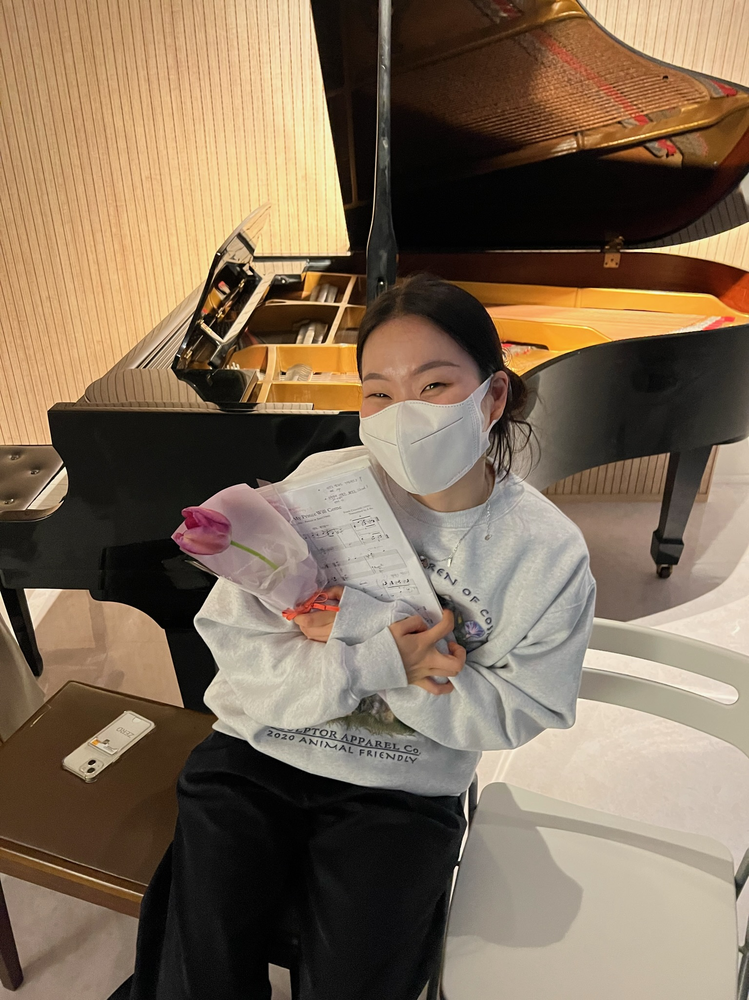
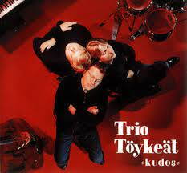
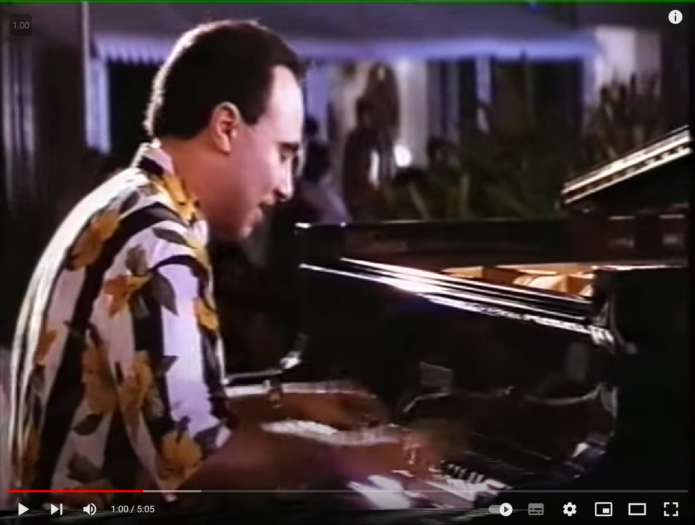

|  | 이름 | 취미 | 언제부터? | 잘침? | 재밌음? | ||
|---|---|---|---|---|---|---|---|
| 봉은 | 피아노 연주 | 작년 가을 쯔음 재즈피아노를 배우기 시작함 | ㄴㄴ | ㅇㅇ | |||
| 좋아하는 아티스트 | |||||||
|  | |||||||
빌 에반스 |
미셸 까밀로(Michel Camilo) |
트리오 토이킷(Trio Toykeat) |
미셸 페트루치아니 |
||||
|
현대 재즈계의 쇼팽 서정성과 감미로움, 몽환적 분위기를 연출하는 보이싱이 특징 대표곡은 Someday My Prince Will Come |
신나고 리듬감 있는 라틴 재즈! 〜(>∇<〜）乁( ˙ ω˙乁) 몰아치는 강한 타건이 특징. 대표곡은 Caribe |
추천곡은 Gadd a Tee?와 Ab Fab! |
추천곡은 Looking up | ||||
| 최근 본 영상! | |||||||
|
천년동안도라는 재즈바에서 탭댄스를 곁들인 공연을 보았다. 왕재밌는 공간이니 무척 추천한다 ヽ(^。^)ノ |
|||||||
| 제발 들어줘 | |||||||
|
 Michel Camilo - Caribe |
|||||||